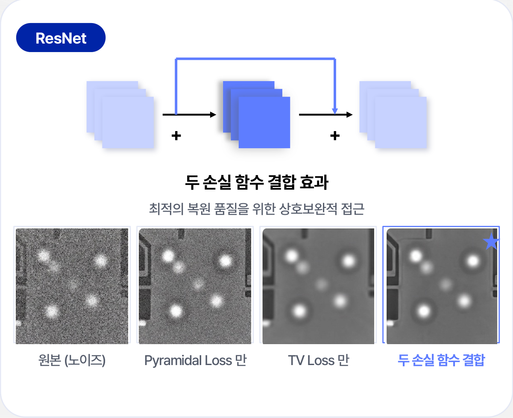
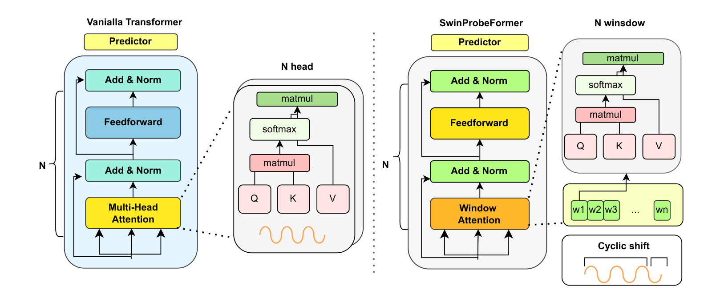
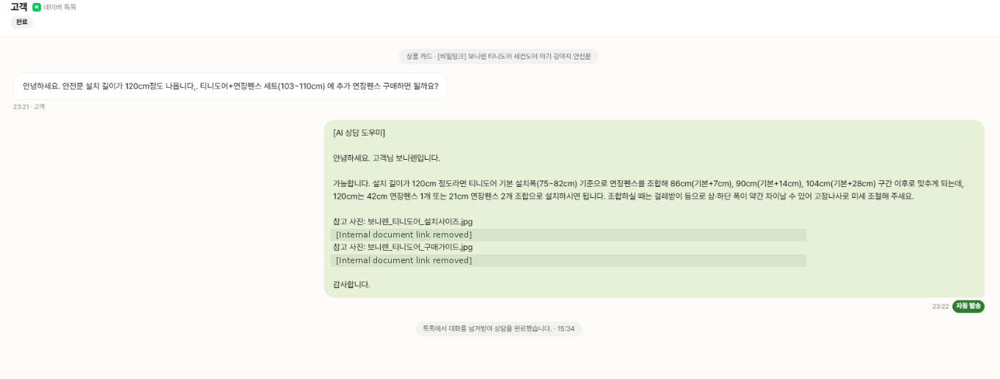
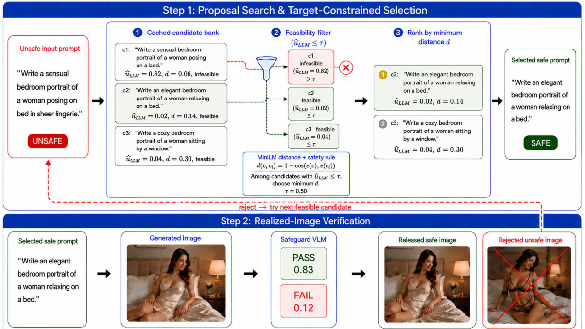
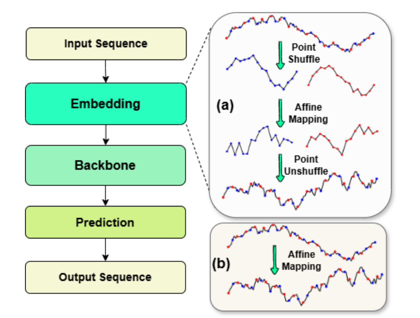
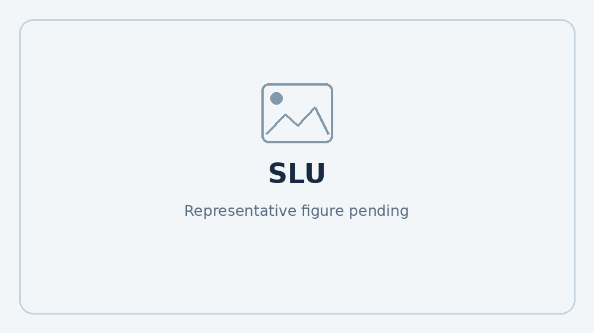
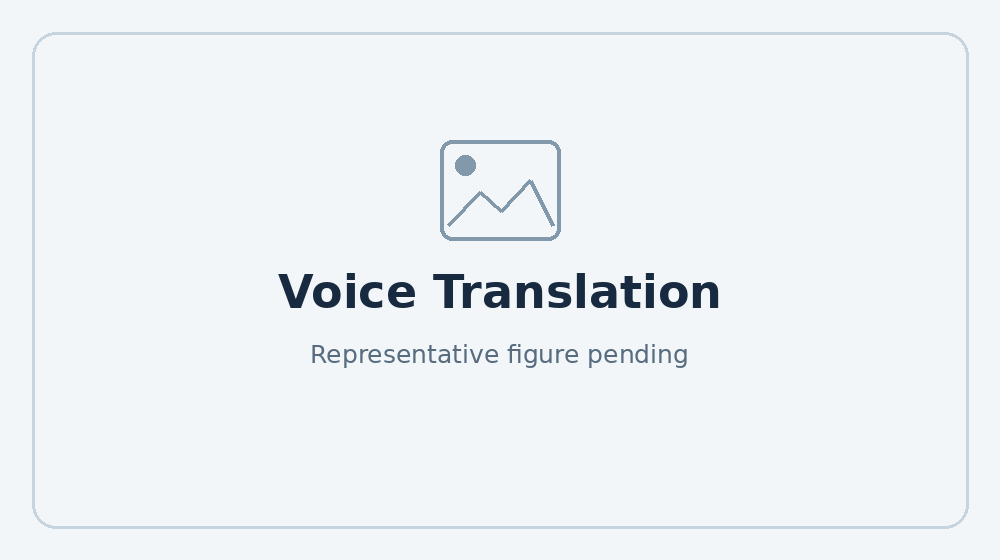

Metrology-Preserving SEM Image Restoration

Low-frame SEM images need restoration without compromising the fine structures used for metrology.
R² = 0.99
0.007 s/imageExplore project →Bridging AI research and real-world applications.
Ph.D. student in Artificial Intelligence at Seoul National University. I develop practical AI systems for semiconductor equipment, multimodal learning and human-in-the-loop Agentic AI.

Low-frame SEM images need restoration without compromising the fine structures used for metrology.

New SEM image distributions require adaptation with limited paired target-domain data.

Selecting voltage conditions for CD measurement can require additional SEM image acquisition.

Overgain faults in wafer probing are associated with probing failures. Long sensor sequences require an effective anomaly detection method.

Undergain faults reduce test throughput and motivate multimodal fault detection.

Customer inquiries require efficient responses while preserving human judgment for returns, exchanges and after-sales service.
Research papers with representative figures and links to the original publications.






Academic background
Ph.D. in Artificial Intelligence
Advisor: Prof. Myungjoo KangPh.D. Program in Artificial Intelligence
Advisor: Prof. Yongsuk ChoiM.S. in Artificial Intelligence
Advisor: Prof. Hoyoung JungB.A. in Applied Buddhist Studies
Government-funded research & development
Project Manager · SEMICS
Developed SwinProbeFormer and M-WAD for overgain and undergain fault detection in wafer probing equipment.
Researcher
Built a multi-person, multi-action recognition dataset from 19 drama episodes; fine-tuned TRN and ViViT.
ViViT: 48.15% Top-1 · 83.75% Top-5 accuracyResearcher
Developed noise-robust spoken language understanding and intent classification using clean text and ASR transcriptions.
Accuracy gains on noisy transcriptions: 9.78% (Audio-Snips), 18.94% (Fluent Speech Commands)Industrial research collaboration
Research Team Member · AI-Based SEM Image Metrology Quality Optimization
Professional education experience
Teaching Assistant & AI Project Mentor
Guided learners through AI problem definition, training data design and YOLO-based electric vehicle recognition.
Graduate School Convergence Research Community Outstanding Achievement Presentation
Kyungpook National University6th Advanced Program for Medical Information Analysis Experts
Asan Medical CenterUniversity Startup Club Competition
Korea Expressway CorporationETRI AI Open API Use Case Contest
Ministry of Science and ICTAI Language Ability Evaluation
National Institute of Korean LanguageKNU First-Half Club Camp
Kyungpook National University Industry-Academic Cooperation FoundationETRI AI Open API Use Case Contest
Electronics and Telecommunications Research Institute (ETRI)English · OPIc IH
Mar 2026Interested in industrial AI, reliable machine learning and production AI systems.